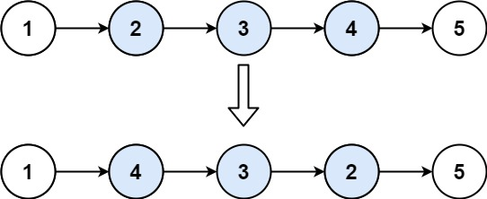

books / company-solutions / Linked List
92. 反转链表 II
本题学习状态正在读取学习记录…下次复习：—
按 M 快速切换薄弱标记题目与约束
给你单链表的头指针 head 和两个整数 left 和 right ，其中 left <= right 。请你反转从位置 left 到位置 right 的链表节点，返回 反转后的链表 。
示例 1：

输入：head = [1,2,3,4,5], left = 2, right = 4
输出：[1,4,3,2,5]
示例 2：
输入：head = [5], left = 1, right = 1
输出：[5]
提示：
-
链表中节点数目为
n -
1 <= n <= 500 -
-500 <= Node.val <= 500 -
1 <= left <= right <= n
进阶： 你可以使用一趟扫描完成反转吗？
核心不变量
设
prev为反转区间的前一个节点、cur为反转区间的第一个节点，每次把cur的下一个节点"摘下"并头插到prev之后，区间前缀固定不动，区间内始终是已反转部分在前。
完整推导
思路推导
- 直觉与痛点（区间反转，接缝要接好）
反转整条链表只需反复改指针；但这里只反转中间一段，难点在于接缝：反转后区间的新头、新尾要正确接上区间外的前后两段。若 left == 1（从头开始反转），就没有"前一个节点"，容易写出一堆特判。用一个 哑节点 dummy 指向 head，就能把"头部"也当成普通情况统一处理。
- 破局思路（先定位，再头插）
prev从dummy出发走left-1步，停在反转区间的前一个节点；cur = prev.next是区间第一个节点。- 接下来做
right-left次"头插"：每次取cur的下一个节点nxt，把它从原位摘下，插到prev的正后方。 - 因为每次插入的都来自
cur之后，cur始终是区间内已反转部分的尾部，不变；prev.next始终是刚插入的新头。
以 [1,2,3,4,5], left=2, right=4 为例：prev 停在 1，cur = 2。第一次把 3 插到 1 后 →1,3,2,4,5；第二次把 4 插到 1 后 →1,4,3,2,5，完成。
- 关键追问（为什么
cur不用移动？）
头插法把新节点放到 prev 之后、cur 之前，cur 的位置含义（区间反转后的尾巴）不变，因此循环里只需不断处理 cur.next。这正是"一趟扫描"的实现，无需先找到 right 位置再回退。
Java 实现（哑节点 + 头插法）
/**
* Definition for singly-linked list.
* public class ListNode {
* int val;
* ListNode next;
* ListNode() {}
* ListNode(int val) { this.val = val; }
* ListNode(int val, ListNode next) { this.val = val; this.next = next; }
* }
*/
class Solution {
public ListNode reverseBetween(ListNode head, int left, int right) {
ListNode dummy = new ListNode(0);
dummy.next = head;
// 1. prev 走到反转区间的前一个节点
ListNode prev = dummy;
for (int i = 0; i < left - 1; i++) {
prev = prev.next;
}
// 2. cur 是区间第一个节点（它最终会成为区间末尾）
ListNode cur = prev.next;
// 3. 做 right-left 次头插：把 cur 之后的节点依次插到 prev 后面
for (int i = 0; i < right - left; i++) {
ListNode nxt = cur.next; // 待搬运的节点
cur.next = nxt.next; // 从原位置摘下 nxt
nxt.next = prev.next; // nxt 指向当前区间头
prev.next = nxt; // nxt 成为新的区间头
}
return dummy.next;
}
}
C++ 实现
/**
* Definition for singly-linked list.
* struct ListNode {
* int val;
* ListNode *next;
* ListNode() : val(0), next(nullptr) {}
* ListNode(int x) : val(x), next(nullptr) {}
* ListNode(int x, ListNode *next) : val(x), next(next) {}
* };
*/
class Solution {
public:
ListNode* reverseBetween(ListNode* head, int left, int right) {
ListNode* dummy = new ListNode(0);
dummy->next = head;
ListNode* prev = dummy;
for (int i = 0; i < left - 1; i++) {
prev = prev->next; // 定位到区间前一个节点
}
ListNode* cur = prev->next; // 区间第一个节点
for (int i = 0; i < right - left; i++) {
ListNode* nxt = cur->next;
cur->next = nxt->next; // 摘下 nxt
nxt->next = prev->next; // 头插
prev->next = nxt;
}
return dummy->next;
}
};
Python 实现
# Definition for singly-linked list.
# class ListNode:
# def __init__(self, val=0, next=None):
# self.val = val
# self.next = next
class Solution:
def reverseBetween(self, head, left, right):
dummy = ListNode(0)
dummy.next = head
prev = dummy
for _ in range(left - 1):
prev = prev.next # 定位到区间前一个节点
cur = prev.next # 区间第一个节点
for _ in range(right - left):
nxt = cur.next
cur.next = nxt.next # 摘下 nxt
nxt.next = prev.next # 头插到 prev 之后
prev.next = nxt
return dummy.next
复杂度
- 时间：
O(n)。定位prev走left-1步，反转走right-left步，合计不超过n步，一趟扫描。 - 空间：
O(1)。只用了dummy / prev / cur / nxt几个指针，原地修改。
易错点与扩展（面试高频考点）
left == 1的头节点特判：加哑节点后，prev可为dummy，区间新头被正确挂回dummy.next，无需单独判断"是否反转头"。- 循环次数是
right - left而非right - left + 1：区间共right-left+1个节点，cur本身不动，只需搬运后面的right-left个。 - 指针顺序写反导致断链：必须先存
nxt = cur.next，再cur.next = nxt.next，最后nxt.next = prev.next；顺序错会丢失后续节点。 - 区间长度为 1（
left == right）：循环0次，等价于不反转，直接返回dummy.next，天然正确。 - 面试追问——一遍扫描 vs 两遍：两遍做法先反转子链表再拼接，需要记录
left前驱与right后继；头插法一遍完成，更省事，也是"进阶"要求的标准答案。